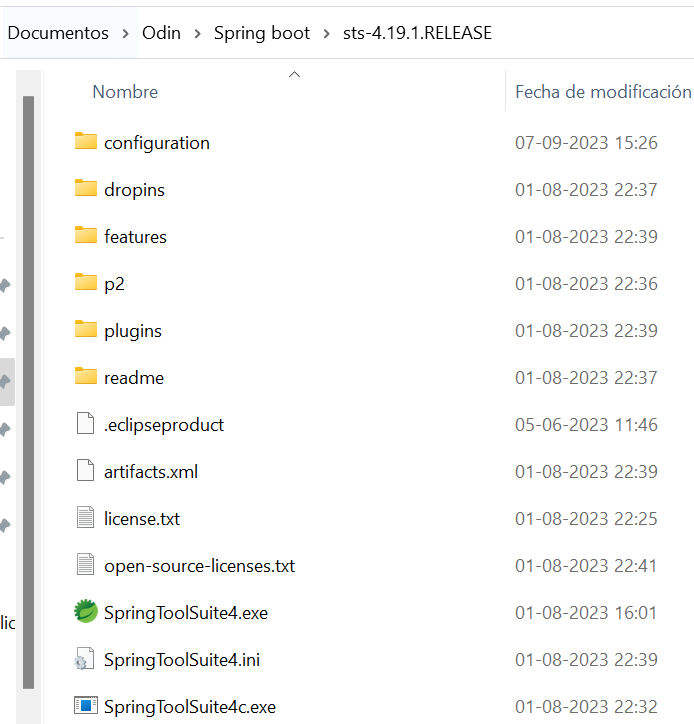
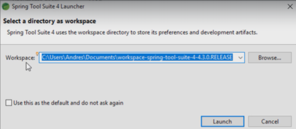
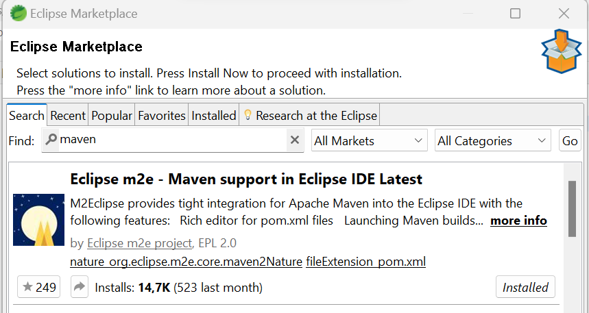
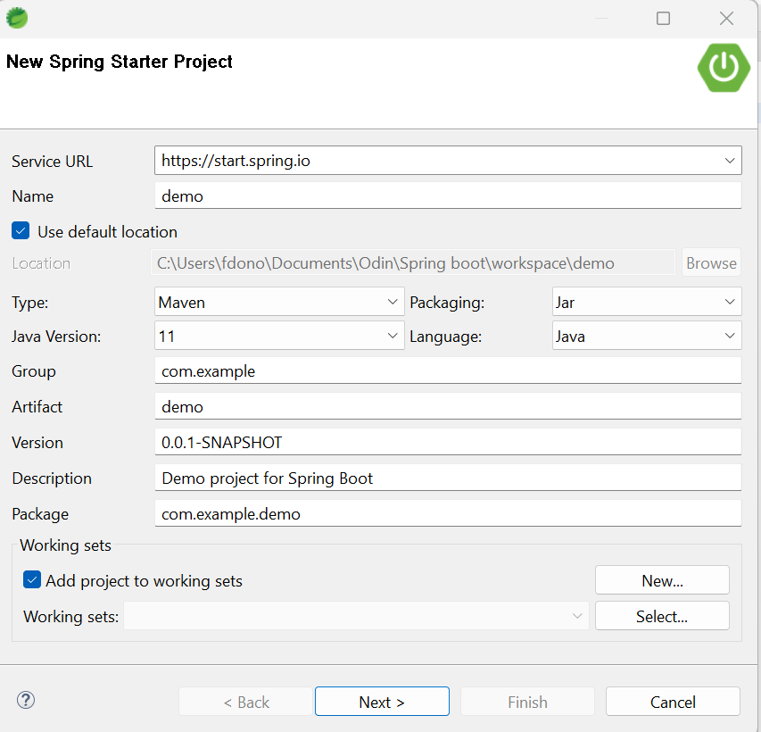
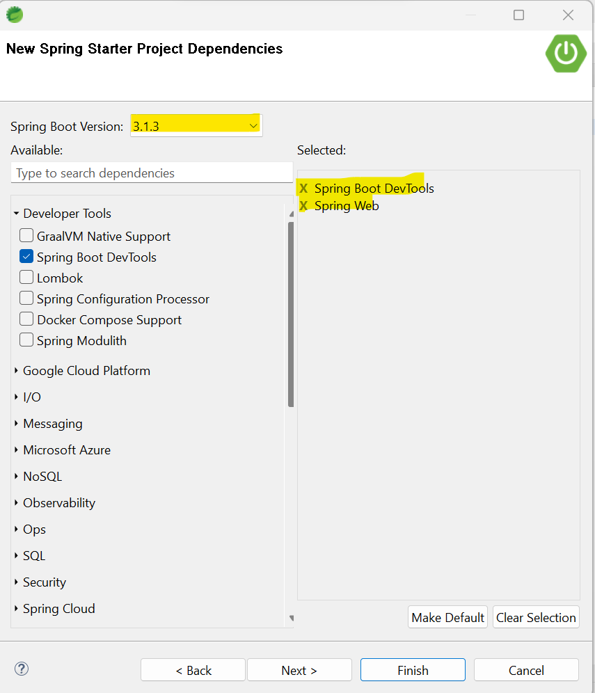
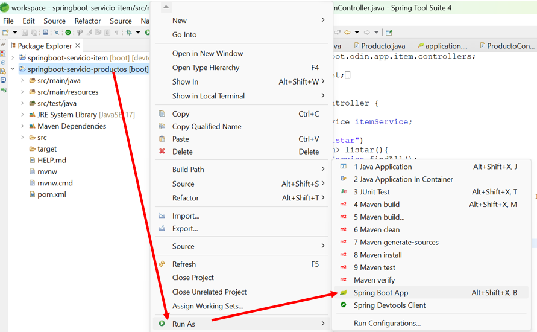
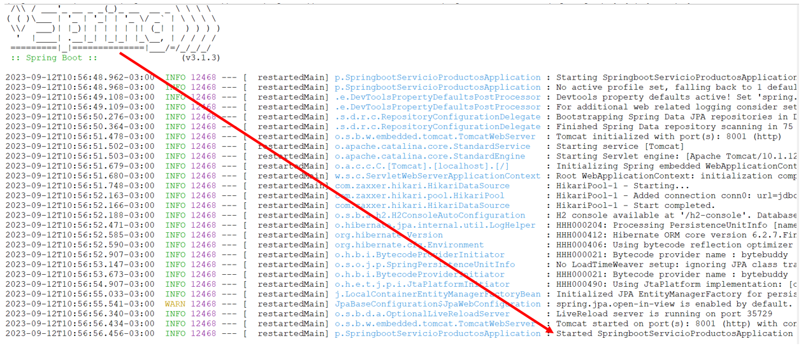

Instalación
IDE Spring Tools
Explicaremos paso a paso la instalación del IDE Spring Tools en windows.
Primero debemos acceder al siguiente sitio oficial de Spring tools, pada descartar el IDE. Acá el enlace directo: Spring Tools 4 for Eclipse. Acá usaremos la versión de Windows.
Una vez descargado el archivo y descomprimido nos quedará una carpeta como la siguiente:

Ahora solamente ejecutamos el archivo ejecutable, solicitará indicar que carpeta será nuestro workspace
acá lo ideal es dejar todos nuestros proyectos futuros relacionados con el mismo tema.
Seleccionamos Launch:

Se puede observar que MAVEN, ya viene instalado dentro de este IDE y lo podemos validar accediendo
a Help, Market place y filtrar por Maven:

Crearemos un proyecto Maven en 3 pasos.
Paso 1:

Paso 2:

Paso 3:


A iniciado el servicio de manera correcta:
